10 Hồi quy đa biến và hồi quy logistic
10.1 Giới thiệu về hồi quy đa biến
Hồi quy đa biến
- Hồi quy tuyến tính đơn biến (Simple linear regression): Lưỡng biến (Bivariate) - hai biến: \(y\) và \(x\)
- Hồi quy tuyến tính đa biến (Multiple linear regression): Nhiều biến: \(y\) và \(x_1, x_2, \cdots\)
Biến chỉ báo và biến phân loại đóng vai trò là biến dự báo
Nghèo đói và khu vực
\[ \widehat{poverty} = 11.17 + 0.38 \times west \]
- Biến giải thích (Explanatory variable): region, mức tham chiếu (reference level): east
- Hệ số chặn (Intercept): Tỷ lệ nghèo đói trung bình ước tính ở các bang miền đông là 11,17%
- Đây là giá trị chúng ta nhận được nếu thay 0 vào biến giải thích
- Hệ số góc (Slope): Tỷ lệ nghèo đói trung bình ước tính ở các bang miền tây cao hơn 0,38% so với các bang miền đông.
- Khi đó, tỷ lệ nghèo đói trung bình ước tính ở các bang miền tây là 11,17 + 0,38 = 11,55%.
- Đây là giá trị chúng ta nhận được nếu thay 1 vào biến giải thích
Nghèo đói và khu vực
Khu vực nào (northeast, midwest, west, hoặc south) là mức tham chiếu?
| Ước tính (Estimate) | Sai số chuẩn (Std. Error) | giá trị t (t value) | Pr(>\(|\)t\(|\)) | |
|---|---|---|---|---|
| (Hệ số chặn) | 9.50 | 0.87 | 10.94 | 0.00 |
| region4midwest | 0.03 | 1.15 | 0.02 | 0.98 |
| region4west | 1.79 | 1.13 | 1.59 | 0.12 |
| region4south | 4.16 | 1.07 | 3.87 | 0.00 |
- northeast (Đúng)
- midwest
- west
- south
- không thể xác định
Nghèo đói và khu vực (northeast, midwest, west, south)
Khu vực nào (northeast, midwest, west, hoặc south) có tỷ lệ nghèo đói thấp nhất?
| Ước tính (Estimate) | Sai số chuẩn (Std. Error) | giá trị t (t value) | Pr(>\(|\)t\(|\)) | |
|---|---|---|---|---|
| (Hệ số chặn) | 9.50 | 0.87 | 10.94 | 0.00 |
| region4midwest | 0.03 | 1.15 | 0.02 | 0.98 |
| region4west | 1.79 | 1.13 | 1.59 | 0.12 |
| region4south | 4.16 | 1.07 | 3.87 | 0.00 |
- northeast (Đúng)
- midwest
- west
- south
- không thể xác định
Bao gồm và đánh giá nhiều biến trong một mô hình
Trọng lượng của sách
| trọng lượng (g) | thể tích (cm\(^3\)) | bìa | |
|---|---|---|---|
| 1 | 800 | 885 | hc |
| 2 | 950 | 1016 | hc |
| 3 | 1050 | 1125 | hc |
| 4 | 350 | 239 | hc |
| 5 | 750 | 701 | hc |
| 6 | 600 | 641 | hc |
| 7 | 1075 | 1228 | hc |
| 8 | 250 | 412 | pb |
| 9 | 700 | 953 | pb |
| 10 | 650 | 929 | pb |
| 11 | 975 | 1492 | pb |
| 12 | 350 | 419 | pb |
| 13 | 950 | 1010 | pb |
| 14 | 425 | 595 | pb |
| 15 | 725 | 1034 | pb |
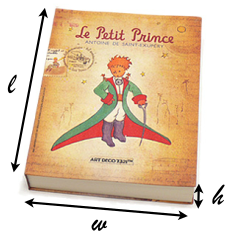
Biểu đồ phân tán (scatterplot) cho thấy mối quan hệ giữa trọng lượng và thể tích của các cuốn sách cũng như kết quả đầu ra của hồi quy. Câu nào dưới đây là đúng?
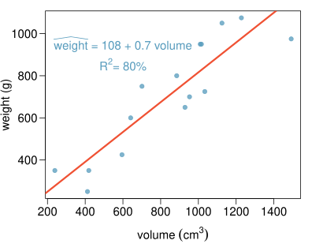
- Trọng lượng của 80% các cuốn sách có thể được dự báo chính xác bằng mô hình này.
- Những cuốn sách có thể tích lớn hơn mức trung bình 10 cm\(^3\) được kỳ vọng sẽ nặng hơn mức trung bình 7 g. (Đúng)
- Tương quan (correlation) giữa trọng lượng và thể tích là \(R = 0.80^2 = 0.64\).
- Mô hình đánh giá thấp trọng lượng của cuốn sách có thể tích lớn nhất.
Mô hình hóa trọng lượng sách sử dụng thể tích
Coefficients:
Estimate Std. Error t value Pr(>|t|)
(Intercept) 107.67931 88.37758 1.218 0.245
volume 0.70864 0.09746 7.271 6.26e-06
Residual standard error: 123.9 on 13 degrees of freedom
Multiple R-squared: 0.8026, Adjusted R-squared: 0.7875
F-statistic: 52.87 on 1 and 13 DF, p-value: 6.262e-06 Trọng lượng của sách bìa cứng và bìa mềm
Bạn có thể xác định xu hướng trong mối quan hệ giữa thể tích và trọng lượng của sách bìa cứng (hardcover) và bìa mềm (paperback) không?
Sách bìa mềm thường có trọng lượng thấp hơn sách bìa cứng sau khi đã kiểm soát thể tích của sách.
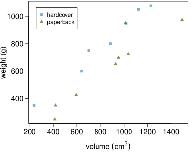
Mô hình hóa trọng lượng sách sử dụng thể tích và loại bìa
Coefficients:
Estimate Std. Error t value Pr(>|t|)
(Intercept) 197.96284 59.19274 3.344 0.005841 **
volume 0.71795 0.06153 11.669 6.6e-08 ***
cover:pb -184.04727 40.49420 -4.545 0.000672 ***
Residual standard error: 78.2 on 12 degrees of freedom
Multiple R-squared: 0.9275, Adjusted R-squared: 0.9154
F-statistic: 76.73 on 2 and 12 DF, p-value: 1.455e-07 Xác định mức tham chiếu
Dựa trên kết quả hồi quy dưới đây, mức nào của biến cover là mức tham chiếu? Lưu ý rằng pb là bìa mềm (paperback).
| Ước tính (Estimate) | Sai số chuẩn (Std. Error) | giá trị t (t value) | Pr(>\(|\)t\(|\)) | |
|---|---|---|---|---|
| (Hệ số chặn) | 197.9628 | 59.1927 | 3.34 | 0.0058 |
| volume | 0.7180 | 0.0615 | 11.67 | 0.0000 |
| cover:pb | -184.0473 | 40.4942 | -4.55 | 0.0007 |
- bìa mềm (paperback)
- bìa cứng (hardcover) (Đúng)
Xác định mức tham chiếu
Câu nào dưới đây mô tả đúng vai trò của các biến trong mô hình hồi quy này?
| Ước tính (Estimate) | Sai số chuẩn (Std. Error) | giá trị t (t value) | Pr(>\(|\)t\(|\)) | |
|---|---|---|---|---|
| (Hệ số chặn) | 197.9628 | 59.1927 | 3.34 | 0.0058 |
| volume | 0.7180 | 0.0615 | 11.67 | 0.0000 |
| cover:pb | -184.0473 | 40.4942 | -4.55 | 0.0007 |
- biến kết quả (response): trọng lượng, biến giải thích (explanatory): thể tích, bìa mềm
- biến kết quả: trọng lượng, biến giải thích: thể tích, bìa cứng
- biến kết quả: thể tích, biến giải thích: trọng lượng, loại bìa
- biến kết quả: trọng lượng, biến giải thích: thể tích, loại bìa (Đúng)
Mô hình tuyến tính (Linear model)
| Ước tính (Estimate) | Sai số chuẩn (Std. Error) | giá trị t (t value) | Pr(>\(|\)t\(|\)) | |
|---|---|---|---|---|
| (Hệ số chặn) | 197.96 | 59.19 | 3.34 | 0.01 |
| volume | 0.72 | 0.06 | 11.67 | 0.00 |
| cover:pb | -184.05 | 40.49 | -4.55 | 0.00 |
\[ \widehat{weight} = 197.96 + 0.72~volume - 184.05~cover:pb \]
- Đối với sách bìa cứng (hardcover): thay 0 cho
cover\[\begin{eqnarray*} \widehat{weight} &=& 197.96 + 0.72~volume - 184.05 \times 0 \\ &=& 197.96 + 0.72~volume \end{eqnarray*}\] - Đối với sách bìa mềm (paperback): thay 1 cho
cover\[\begin{eqnarray*} \widehat{weight} &=& 197.96 + 0.72~volume - 184.05 \times 1 \\ &=& 13.91 + 0.72~volume \end{eqnarray*}\]
Trực quan hóa mô hình tuyến tính
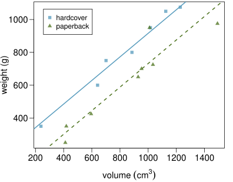
Giải thích các hệ số hồi quy
| Ước tính (Estimate) | Sai số chuẩn (Std. Error) | giá trị t (t value) | Pr(>\(|\)t\(|\)) | |
|---|---|---|---|---|
| (Hệ số chặn) | 197.96 | 59.19 | 3.34 | 0.01 |
| volume | 0.72 | 0.06 | 11.67 | 0.00 |
| cover:pb | -184.05 | 40.49 | -4.55 | 0.00 |
- Hệ số góc của volume: Khi giữ các yếu tố khác không đổi, những cuốn sách có thể tích lớn hơn 1 cm\(^3\) thường có trọng lượng nặng hơn khoảng 0,72 gram.
- Hệ số góc của cover: Khi giữ các yếu tố khác không đổi, mô hình dự báo rằng sách bìa mềm nhẹ hơn sách bìa cứng 184 gram.
- Hệ số chặn (Intercept): Sách bìa cứng không có thể tích được kỳ vọng có trọng lượng trung bình là 198 gram.
- Rõ ràng, hệ số chặn không có ý nghĩa thực tế trong ngữ cảnh này. Nó chỉ phục vụ để điều chỉnh độ cao của đường thẳng.
Dự báo
Cách tính nào sau đây là đúng cho trọng lượng dự báo của một cuốn sách bìa mềm có thể tích 600 cm\(^3\)?
| Ước tính (Estimate) | Sai số chuẩn (Std. Error) | giá trị t (t value) | Pr(>\(|\)t\(|\)) | |
|---|---|---|---|---|
| (Hệ số chặn) | 197.96 | 59.19 | 3.34 | 0.01 |
| volume | 0.72 | 0.06 | 11.67 | 0.00 |
| cover:pb | -184.05 | 40.49 | -4.55 | 0.00 |
- 197.96 + 0.72 * 600 - 184.05 * 1 (Đúng) \(= 445.91\) gram
- 184.05 + 0.72 * 600 - 197.96 * 1
- 197.96 + 0.72 * 600 - 184.05 * 0
- 197.96 + 0.72 * 1 - 184.05 * 600
Một ví dụ khác: Mô hình hóa điểm kiểm tra của trẻ em
Dự báo điểm kiểm tra nhận thức của trẻ em ba và bốn tuổi bằng cách sử dụng các đặc điểm của mẹ chúng. Dữ liệu từ một cuộc khảo sát phụ nữ Mỹ trưởng thành và con cái của họ - một mẫu phụ từ Khảo sát Thanh niên theo thời gian của Quốc gia (National Longitudinal Survey of Youth).
| kid_score | mom_hs | mom_iq | mom_work | mom_age | |
|---|---|---|---|---|---|
| 1 | 65 | yes | 121.12 | yes | 27 |
| \(\vdots\) | |||||
| 5 | 115 | yes | 92.75 | yes | 27 |
| 6 | 98 | no | 107.90 | no | 18 |
| \(\vdots\) | |||||
| 434 | 70 | yes | 91.25 | yes | 25 |
Giải thích hệ số góc
Giải thích nào là đúng cho hệ số góc của chỉ số IQ của mẹ?
| Ước tính (Estimate) | Sai số chuẩn (Std. Error) | giá trị t (t value) | Pr(>\(|\)t\(|\)) | |
|---|---|---|---|---|
| (Hệ số chặn) | 19.59 | 9.22 | 2.13 | 0.03 |
| mom_hs:yes | 5.09 | 2.31 | 2.20 | 0.03 |
| mom_iq | 0.56 | 0.06 | 9.26 | 0.00 |
| mom_work:yes | 2.54 | 2.35 | 1.08 | 0.28 |
| mom_age | 0.22 | 0.33 | 0.66 | 0.51 |
Khi giữ các yếu tố khác không đổi, những đứa trẻ có mẹ có chỉ số IQ cao hơn một điểm thường có điểm số trung bình cao hơn 0,56 điểm.
Giải thích hệ số góc
Giải thích nào là đúng cho hệ số chặn?
| Ước tính (Estimate) | Sai số chuẩn (Std. Error) | giá trị t (t value) | Pr(>\(|\)t\(|\)) | |
|---|---|---|---|---|
| (Hệ số chặn) | 19.59 | 9.22 | 2.13 | 0.03 |
| mom_hs:yes | 5.09 | 2.31 | 2.20 | 0.03 |
| mom_iq | 0.56 | 0.06 | 9.26 | 0.00 |
| mom_work:yes | 2.54 | 2.35 | 1.08 | 0.28 |
| mom_age | 0.22 | 0.33 | 0.66 | 0.51 |
Những đứa trẻ có mẹ chưa học hết trung học phổ thông, không đi làm trong ba năm đầu đời của trẻ, có chỉ số IQ bằng 0 và 0 tuổi được kỳ vọng có điểm số trung bình là 19,59. Rõ ràng, hệ số chặn không có bất kỳ ý nghĩa nào trong ngữ cảnh này.
Giải thích hệ số góc
Giải thích nào là đúng cho hệ số góc của mom_work?
| Ước tính (Estimate) | Sai số chuẩn (Std. Error) | giá trị t (t value) | Pr(>\(|\)t\(|\)) | |
|---|---|---|---|---|
| (Hệ số chặn) | 19.59 | 9.22 | 2.13 | 0.03 |
| mom_hs:yes | 5.09 | 2.31 | 2.20 | 0.03 |
| mom_iq | 0.56 | 0.06 | 9.26 | 0.00 |
| mom_work:yes | 2.54 | 2.35 | 1.08 | 0.28 |
| mom_age | 0.22 | 0.33 | 0.66 | 0.51 |
Khi tất cả các yếu tố khác như nhau, những đứa trẻ có mẹ đi làm trong ba năm đầu đời của trẻ 1. được ước tính có điểm số thấp hơn 2,54 điểm 2. được ước tính có điểm số cao hơn 2,54 điểm (Đúng) so với những đứa trẻ có mẹ không đi làm.
Hệ số xác định hiệu chỉnh \(R^2\) như một công cụ tốt hơn cho hồi quy đa biến
Xem lại: Mô hình hóa nghèo đói
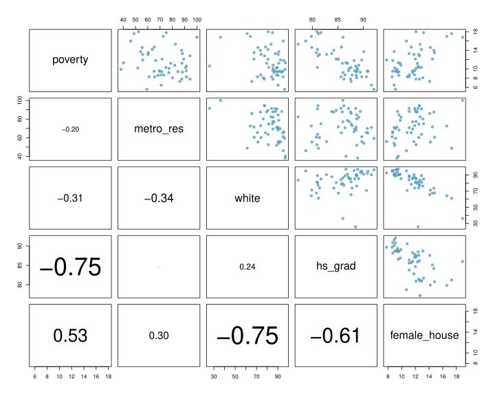
Dự báo nghèo đói sử dụng tỷ lệ % chủ hộ là nữ
| Ước tính (Estimate) | Sai số chuẩn (Std. Error) | giá trị t (t value) | Pr(>\(|\)t\(|\)) | |
|---|---|---|---|---|
| (Hệ số chặn) | 3.31 | 1.90 | 1.74 | 0.09 |
| female_house | 0.69 | 0.16 | 4.32 | 0.00 |
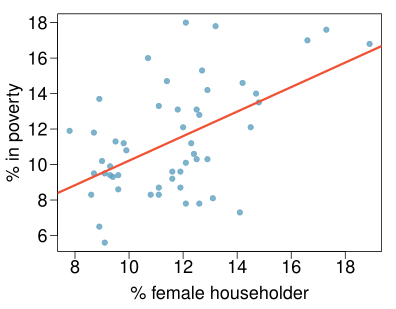
\[\begin{align*} R &= 0.53 \\ R^2 &= 0.53^2 = 0.28 \end{align*}\]
Một cái nhìn khác về \(R^2\)
\(R^2\) có thể được tính theo ba cách:
- bình phương hệ số tương quan (correlation coefficient) của \(x\) và \(y\) (cách chúng ta vẫn hay tính)
- bình phương hệ số tương quan của \(y\) và \(\hat{y}\)
- dựa trên định nghĩa: \[ R^2 = \frac{\text{biến thiên được giải thích trong }y}{\text{tổng biến thiên trong }y} \]
Sử dụng ANOVA chúng ta có thể tính toán biến thiên được giải thích và tổng biến thiên trong \(y\).
Tổng bình phương (Sum of squares)
| Df | Tổng bình phương (Sum Sq) | Bình phương trung bình (Mean Sq) | giá trị F (F value) | Pr(>F) | |
|---|---|---|---|---|---|
| female_house | 1 | 132.57 | 132.57 | 18.68 | 0.00 |
| Phần dư (Residuals) | 49 | 347.68 | 7.10 | ||
| Tổng cộng (Total) | 50 | 480.25 |
\[\begin{eqnarray*} \text{Tổng bình phương của $y$: } SS_{Total} &=& \sum(y - \bar{y})^2 = 480.25 \text{ $\rightarrow$ tổng biến thiên} \\ \text{Tổng bình phương của phần dư: } SS_{Error} &=& \sum e_i^2 = 347.68 \text{ $\rightarrow$ biến thiên không được giải thích} \\ \text{Tổng bình phương của $x$: } SS_{Model} &=& SS_{Total} - SS_{Error} \text{ $\rightarrow$ biến thiên được giải thích} \\ &=& 480.25 - 347.68 = 132.57 \end{eqnarray*}\]
\[ R^2 = \frac{\text{biến thiên được giải thích}}{\text{tổng biến thiên}} = \frac{132.57}{480.25} = 0.28 \]
Tại sao phải bận tâm?
Tại sao phải bận tâm với một cách tiếp cận khác để tính \(R^2\) khi chúng ta đã có một cách hoàn hảo để tính nó bằng bình phương hệ số tương quan?
- Đối với hồi quy tuyến tính đơn biến (single-predictor linear regression), việc có ba cách để tính cùng một giá trị có vẻ là thừa.
- Tuy nhiên, trong hồi quy tuyến tính đa biến (multiple linear regression), chúng ta không thể tính \(R^2\) bằng bình phương tương quan giữa \(x\) và \(y\) vì chúng ta có nhiều biến \(x\).
- Và tiếp theo chúng ta sẽ tìm hiểu một thước đo khác về biến thiên được giải thích, hệ số xác định hiệu chỉnh (adjusted \(R^2\)), yêu cầu sử dụng cách tiếp cận thứ ba, tỷ lệ giữa biến thiên được giải thích và không được giải thích.
Dự báo nghèo đói sử dụng tỷ lệ % chủ hộ là nữ + % người da trắng
Mô hình tuyến tính:
| Ước tính (Estimate) | Sai số chuẩn (Std. Error) | giá trị t (t value) | Pr(>\(|\)t\(|\)) | |
|---|---|---|---|---|
| (Hệ số chặn) | -2.58 | 5.78 | -0.45 | 0.66 |
| female_house | 0.89 | 0.24 | 3.67 | 0.00 |
| white | 0.04 | 0.04 | 1.08 | 0.29 |
ANOVA:
| Df | Tổng bình phương (Sum Sq) | Bình phương trung bình (Mean Sq) | giá trị F (F value) | Pr(>F) | |
|---|---|---|---|---|---|
| female_house | 1 | 132.57 | 132.57 | 18.74 | 0.00 |
| white | 1 | 8.21 | 8.21 | 1.16 | 0.29 |
| Phần dư (Residuals) | 48 | 339.47 | 7.07 | ||
| Tổng cộng (Total) | 50 | 480.25 |
\[ R^2 = \frac{\text{biến thiên được giải thích}}{\text{tổng biến thiên}} = \frac{132.57 + 8.21}{480.25} = 0.29 \]
Việc thêm biến white vào mô hình có bổ sung thông tin giá trị nào mà female_house chưa cung cấp không?
Cộng tuyến giữa các biến giải thích
nghèo đói so với % chủ hộ là nữ
| Ước tính (Estimate) | Sai số chuẩn (Std. Error) | giá trị t (t value) | Pr(>\(|\)t\(|\)) | |
|---|---|---|---|---|
| (Hệ số chặn) | 3.31 | 1.90 | 1.74 | 0.09 |
| female_house | 0.69 | 0.16 | 4.32 | 0.00 |
nghèo đói so với % chủ hộ là nữ và % người da trắng
| Ước tính (Estimate) | Sai số chuẩn (Std. Error) | giá trị t (t value) | Pr(>\(|\)t\(|\)) | |
|---|---|---|---|---|
| (Hệ số chặn) | -2.58 | 5.78 | -0.45 | 0.66 |
| female_house | 0.89 | 0.24 | 3.67 | 0.00 |
| white | 0.04 | 0.04 | 1.08 | 0.29 |
- Hai biến dự báo được gọi là cộng tuyến (collinear) khi chúng tương quan với nhau, và hiện tượng cộng tuyến (collinearity) này làm phức tạp việc ước lượng mô hình.
- Các biến dự báo cũng được gọi là các biến giải thích hoặc biến độc lập. Lý tưởng nhất, chúng nên độc lập với nhau.
- Chúng ta không thích thêm các biến dự báo có liên quan với nhau vào mô hình, vì thường việc thêm một biến như vậy không mang lại ích lợi gì. Thay vào đó, chúng ta ưu tiên mô hình tốt nhất đơn giản nhất, tức là mô hình tinh gọn (parsimonious model).
- Mặc dù không thể tránh khỏi sự cộng tuyến phát sinh trong dữ liệu quan sát (observational data), các thực nghiệm thường được thiết kế để ngăn chặn sự tương quan giữa các biến dự báo.
\(R^2\) so với hệ số xác định hiệu chỉnh adjusted \(R^2\)
| \(R^2\) | Hệ số xác định hiệu chỉnh (Adjusted \(R^2\)) | |
|---|---|---|
| Mô hình 1 (Đơn biến) | 0.28 | 0.26 |
| Mô hình 2 (Đa biến) | 0.29 | 0.26 |
- Khi bất kỳ biến nào được thêm vào mô hình, \(R^2\) đều tăng.
- Nhưng nếu biến được thêm vào không thực sự cung cấp bất kỳ thông tin mới nào, hoặc hoàn toàn không liên quan, adjusted \(R^2\) sẽ không tăng.
Hệ số xác định hiệu chỉnh Adjusted \(R^2\)
Hệ số xác định hiệu chỉnh Adjusted \(R^2\) \[ R^2_{adj} = 1 - \left( \frac{ SS_{Error} }{ SS_{Total} } \times \frac{n - 1}{n - p - 1} \right) \] trong đó \(n\) là số lượng trường hợp (cases) và \(p\) là số lượng biến dự báo (biến giải thích) trong mô hình.
- Vì \(p\) không bao giờ âm, \(R^2_{adj}\) sẽ luôn nhỏ hơn \(R^2\).
- \(R^2_{adj}\) áp dụng một hình phạt (penalty) cho số lượng biến dự báo được đưa vào mô hình.
- Do đó, chúng ta chọn các mô hình có \(R^2_{adj}\) cao hơn các mô hình khác.
Tính hệ số xác định hiệu chỉnh adjusted \(R^2\)
| Df | Tổng bình phương (Sum Sq) | Bình phương trung bình (Mean Sq) | giá trị F (F value) | Pr(>F) | |
|---|---|---|---|---|---|
| female_house | 1 | 132.57 | 132.57 | 18.74 | 0.0001 |
| white | 1 | 8.21 | 8.21 | 1.16 | 0.2868 |
| Phần dư (Residuals) | 48 | 339.47 | 7.07 | ||
| Tổng cộng (Total) | 50 | 480.25 |
\[\begin{eqnarray*} R^2_{adj} &=& 1 - \left( \frac{ SS_{Error} }{ SS_{Total} } \times \frac{n - 1}{n - p - 1} \right) \\ &=& 1 - \left( \frac{ 339.47 }{ 480.25 } \times \frac{51 - 1}{51 - 2 - 1} \right) \\ &=& 1 - \left( \frac{ 339.47 }{ 480.25 } \times \frac{50}{48} \right) \\ &=& 1 - 0.74 \\ &=& 0.26 \end{eqnarray*}\]
10.2 Lựa chọn mô hình
Xác định các biến trong mô hình có thể không hữu ích
Vẻ đẹp trong lớp học (Beauty in the classroom)
- Dữ liệu: Đánh giá của sinh viên về vẻ đẹp và chất lượng giảng dạy của giảng viên cho 463 khóa học tại Đại học Texas.
- Các đánh giá được thực hiện vào cuối học kỳ, và các phán đoán về vẻ đẹp được thực hiện sau đó bởi sáu sinh viên không tham gia lớp học và không biết về các đánh giá khóa học (2 nữ sinh viên năm cuối, 2 nam sinh viên năm cuối, một nữ sinh viên năm đầu, một nam sinh viên năm đầu).
Đánh giá của giáo sư so với vẻ đẹp
Điểm đánh giá giáo sư (điểm càng cao càng tốt) so với điểm vẻ đẹp (điểm 0 có nghĩa là trung bình, điểm âm có nghĩa là dưới trung bình và điểm dương là trên trung bình):
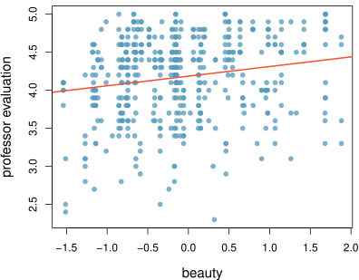
Câu nào dưới đây là đúng dựa trên kết quả đầu ra của mô hình?
| Ước tính (Estimate) | Sai số chuẩn (Std. Error) | giá trị t (t value) | Pr(>\(|\)t\(|\)) | |
|---|---|---|---|---|
| (Hệ số chặn) | 4.19 | 0.03 | 167.24 | 0.00 |
| beauty | 0.13 | 0.03 | 4.00 | 0.00 |
\(R^2\) = 0.0336
- Mô hình dự báo đúng 3,36% điểm đánh giá của giáo sư.
- Vẻ đẹp không phải là một biến dự báo có ý nghĩa cho điểm đánh giá của giáo sư.
- Những giáo sư có điểm vẻ đẹp cao hơn mức trung bình 1 điểm thường có điểm đánh giá cao hơn 0,13 điểm. (Đúng)
- 3,36% biến thiên trong điểm vẻ đẹp có thể được giải thích bằng điểm đánh giá của giáo sư.
- Hệ số tương quan có thể là \(\sqrt{0.0336} = 0.18\) hoặc \(-0.18\), chúng ta không thể biết giá trị nào là đúng.
Phân tích khám phá (Exploratory analysis)
Có đặc điểm nào thú vị không? Ít giảng viên nữ có điểm vẻ đẹp rất thấp.
Đối với một điểm vẻ đẹp nhất định, các giáo sư nam được đánh giá cao hơn, thấp hơn hay tương đương với các giáo sư nữ? Khó có thể trả lời chỉ dựa trên biểu đồ này.
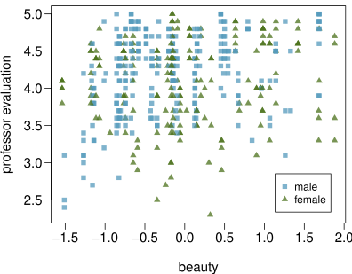
Đánh giá của giáo sư so với vẻ đẹp + giới tính
Đối với một điểm vẻ đẹp nhất định, các giáo sư nam được đánh giá cao hơn, thấp hơn hay tương đương với các giáo sư nữ?
| Ước tính (Estimate) | Sai số chuẩn (Std. Error) | giá trị t (t value) | Pr(>\(|\)t\(|\)) | |
|---|---|---|---|---|
| (Hệ số chặn) | 4.09 | 0.04 | 107.85 | 0.00 |
| beauty | 0.14 | 0.03 | 4.44 | 0.00 |
| gender.male | 0.17 | 0.05 | 3.38 | 0.00 |
\(R^2_{adj}\) = 0.057
- cao hơn (Đúng) \(\rightarrow\) Khi giữ vẻ đẹp không đổi, các giáo sư nam được đánh giá trung bình cao hơn 0,17 điểm so với các giáo sư nữ.
- thấp hơn
- tương đương
Mô hình đầy đủ (Full model)
| Ước tính (Estimate) | Sai số chuẩn (Std. Error) | giá trị t (t value) | Pr(>\(|\)t\(|\)) | |
|---|---|---|---|---|
| (Hệ số chặn) | 4.6282 | 0.1720 | 26.90 | 0.00 |
| beauty | 0.1080 | 0.0329 | 3.28 | 0.00 |
| gender.male | 0.2040 | 0.0528 | 3.87 | 0.00 |
| age | -0.0089 | 0.0032 | -2.75 | 0.01 |
| formal.yes | 0.1511 | 0.0749 | 2.02 | 0.04 |
| lower.yes | 0.0582 | 0.0553 | 1.05 | 0.29 |
| native.non english | -0.2158 | 0.1147 | -1.88 | 0.06 |
| minority.yes | -0.0707 | 0.0763 | -0.93 | 0.35 |
| students | -0.0004 | 0.0004 | -1.03 | 0.30 |
| tenure.tenure track | -0.1933 | 0.0847 | -2.28 | 0.02 |
| tenure.tenured | -0.1574 | 0.0656 | -2.40 | 0.02 |
Các giả thuyết (Hypotheses)
Cũng giống như việc giải thích các hệ số góc có tính đến tất cả các biến khác trong mô hình, các giả thuyết để kiểm định ý nghĩa của một biến dự báo cũng tính đến tất cả các biến khác.
- \(H_0: B_i = 0\) khi các biến giải thích khác được đưa vào mô hình.
- \(H_A: B_i \ne 0\) khi các biến giải thích khác được đưa vào mô hình.
Đánh giá ý nghĩa: các biến số (numerical variables)
Giá trị p (p-value) cho độ tuổi (age) là 0,01. Điều này cho thấy gì?
| Ước tính (Estimate) | Sai số chuẩn (Std. Error) | giá trị t (t value) | Pr(>\(|\)t\(|\)) | |
|---|---|---|---|---|
| … | ||||
| age | -0.0089 | 0.0032 | -2.75 | 0.01 |
| … |
- Vì giá trị p là số dương, tuổi của giáo sư càng cao thì chúng ta càng kỳ vọng họ được đánh giá cao hơn.
- Nếu chúng ta giữ tất cả các biến khác trong mô hình, có bằng chứng mạnh mẽ cho thấy tuổi của giáo sư có liên quan đến điểm đánh giá của họ. (Đúng)
- Xác suất để hệ số góc thực sự của biến tuổi bằng 0 là 0,01.
- Có khoảng 1% khả năng hệ số góc thực sự của biến tuổi là -0,0089.
Đánh giá ý nghĩa: các biến phân loại (categorical variables)
Biên chế (Tenure) là một biến phân loại có 3 mức: non tenure track (không trong lộ trình biên chế), tenure track (trong lộ trình biên chế), tenured (đã có biên chế). Dựa trên kết quả mô hình đã cho, câu nào dưới đây là sai?
| Ước tính (Estimate) | Sai số chuẩn (Std. Error) | giá trị t (t value) | Pr(>\(|\)t\(|\)) | |
|---|---|---|---|---|
| … | ||||
| tenure.tenure track | -0.1933 | 0.0847 | -2.28 | 0.02 |
| tenure.tenured | -0.1574 | 0.0656 | -2.40 | 0.02 |
- Mức tham chiếu là non tenure track.
- Khi tất cả các yếu tố khác như nhau, các giáo sư trong lộ trình biên chế được đánh giá trung bình thấp hơn 0,19 điểm so với các giáo sư không trong lộ trình biên chế.
- Khi tất cả các yếu tố khác như nhau, các giáo sư đã có biên chế được đánh giá trung bình thấp hơn 0,16 điểm so với các giáo sư không trong lộ trình biên chế.
- Khi tất cả các yếu tố khác như nhau, có một sự khác biệt có ý nghĩa giữa điểm đánh giá trung bình của các giáo sư trong lộ trình biên chế và các giáo sư đã có biên chế. (Đúng)
Đánh giá ý nghĩa
Biến dự báo nào dường như không đóng góp có ý nghĩa cho mô hình, tức là có thể không phải là các biến dự báo có ý nghĩa cho điểm đánh giá của giáo sư?
| Ước tính (Estimate) | Sai số chuẩn (Std. Error) | giá trị t (t value) | Pr(>\(|\)t\(|\)) | |
|---|---|---|---|---|
| (Hệ số chặn) | 4.6282 | 0.1720 | 26.90 | 0.00 |
| beauty | 0.1080 | 0.0329 | 3.28 | 0.00 |
| gender.male | 0.2040 | 0.0528 | 3.87 | 0.00 |
| age | -0.0089 | 0.0032 | -2.75 | 0.01 |
| formal.yes | 0.1511 | 0.0749 | 2.02 | 0.04 |
| lower.yes | 0.0582 | 0.0553 | 1.05 | 0.29 |
| native.non english | -0.2158 | 0.1147 | -1.88 | 0.06 |
| minority.yes | -0.0707 | 0.0763 | -0.93 | 0.35 |
| students | -0.0004 | 0.0004 | -1.03 | 0.30 |
| tenure.tenure track | -0.1933 | 0.0847 | -2.28 | 0.02 |
| tenure.tenured | -0.1574 | 0.0656 | -2.40 | 0.02 |
Hai chiến lược lựa chọn mô hình
Chiến lược lựa chọn mô hình
Dựa trên những gì chúng ta đã học cho đến nay, một số cách nào bạn có thể nghĩ ra để xác định biến nào cần giữ lại trong mô hình và biến nào cần loại bỏ?
Loại bỏ ngược
- Bắt đầu với mô hình đầy đủ (full model)
- Loại bỏ từng biến một và ghi lại \(R^2_{adj}\) của mỗi mô hình nhỏ hơn
- Chọn mô hình có sự gia tăng cao nhất trong \(R^2_{adj}\)
- Lặp lại cho đến khi không có mô hình nào mang lại sự gia tăng trong \(R^2_{adj}\)
Loại bỏ ngược
| \(R^2_{adj}\) | ||
|---|---|---|
| Đầy đủ | beauty + gender + age + formal + lower + native + minority + students + tenure | 0.0839 |
| Bước 1 | gender + age + formal + lower + native + minority + students + tenure | 0.0642 |
| beauty + age + formal + lower + native + minority + students + tenure | 0.0557 | |
| beauty + gender + formal + lower + native + minority + students + tenure | 0.0706 | |
| beauty + gender + age + lower + native + minority + students + tenure | 0.0777 | |
| beauty + gender + age + formal + native + minority + students + tenure | 0.0837 | |
| beauty + gender + age + formal + lower + minority + students + tenure | 0.0788 | |
| beauty + gender + age + formal + lower + native + students + tenure | 0.0842 | |
| beauty + gender + age + formal + lower + native + minority + tenure | 0.0838 | |
| beauty + gender + age + formal + lower + native + minority + students | 0.0733 | |
| Bước 2 | gender + age + formal + lower + native + students + tenure | 0.0647 |
| beauty + age + formal + lower + native + students + tenure | 0.0543 | |
| beauty + gender + formal + lower + native + students + tenure | 0.0708 | |
| beauty + gender + age + lower + native + students + tenure | 0.0776 | |
| beauty + gender + age + formal + native + students + tenure | 0.0846 | |
| beauty + gender + age + formal + lower + native + tenure | 0.0844 | |
| beauty + gender + age + formal + lower + native + students | 0.0725 | |
| Bước 3 | gender + age + formal + native + students + tenure | 0.0653 |
| beauty + age + formal + native + students + tenure | 0.0534 | |
| beauty + gender + formal + native + students + tenure | 0.0707 | |
| beauty + gender + age + native + students + tenure | 0.0786 | |
| beauty + gender + age + formal + students + tenure | 0.0756 | |
| beauty + gender + age + formal + native + tenure | 0.0855 | |
| beauty + gender + age + formal + native + students | 0.0713 | |
| Bước 4 | gender + age + formal + native + tenure | 0.0667 |
| beauty + age + formal + native + tenure | 0.0553 | |
| beauty + gender + formal + native + tenure | 0.0723 | |
| beauty + gender + age + native + tenure | 0.0806 | |
| beauty + gender + age + formal + tenure | 0.0773 | |
| beauty + gender + age + formal + native | 0.0713 |
Hàm step trong R
Hàm step trong R thực hiện một quy trình loại bỏ ngược tương tự, tuy nhiên nó sử dụng một thước đo khác gọi là AIC (Akaike Information Criterion) thay vì adjusted \(R^2\) để thực hiện lựa chọn mô hình.
Call:
lm(formula = profevaluation ~ beauty + gender + age + formal +
native + tenure, data = d)
Coefficients:
(Intercept) beauty gendermale
4.628435 0.105546 0.208079
age formalyes nativenon english
-0.008844 0.132422 -0.243003
tenuretenure track tenuretenured
-0.206784 -0.175967 Mô hình tốt nhất: beauty + gender + age + formal + native + tenure
Lựa chọn tiến
- Bắt đầu với các phép hồi quy của biến kết quả so với từng biến giải thích
- Chọn mô hình có \(R^2_{adj}\) cao nhất
- Thêm các biến còn lại từng biến một vào mô hình hiện có, và một lần nữa chọn mô hình có \(R^2_{adj}\) cao nhất
- Lặp lại cho đến khi việc thêm bất kỳ biến còn lại nào cũng không dẫn đến \(R^2_{adj}\) cao hơn
Tiếp cận theo giá trị p, một sự thay thế cho hệ số xác định hiệu chỉnh adjusted \(R^2\)
Loại bỏ ngược và lựa chọn tiến
- Loại bỏ ngược với cách tiếp cận giá trị p:
- Bắt đầu với mô hình đầy đủ
- Loại bỏ biến có giá trị p cao nhất và khớp lại mô hình nhỏ hơn
- Lặp lại cho đến khi tất cả các biến còn lại trong mô hình đều có ý nghĩa
- Lựa chọn tiến với cách tiếp cận giá trị p:
- Bắt đầu với các phép hồi quy của biến kết quả so với từng biến giải thích
- Chọn biến có giá trị p có ý nghĩa thấp nhất
- Thêm các biến còn lại từng biến một vào mô hình hiện có, và chọn biến có giá trị p có ý nghĩa thấp nhất
- Lặp lại cho đến khi không còn biến nào trong số các biến còn lại có giá trị p có ý nghĩa
Loại bỏ ngược: cách tiếp cận giá trị \(p\)
| Bước | Các biến được bao gồm & giá trị p | |||||||||
|---|---|---|---|---|---|---|---|---|---|---|
| Đầy đủ | beauty | gender male | age | formal yes | lower yes | native nonenglish | minority yes | students | tenure track | tenure tenured |
| 0.00 | 0.00 | 0.01 | 0.04 | 0.29 | 0.06 | 0.35 | 0.30 | 0.02 | 0.02 | |
| Bước 1 | beauty | gender male | age | formal yes | lower yes | native nonenglish | students | tenure track | tenure tenured | |
| 0.00 | 0.00 | 0.01 | 0.04 | 0.38 | 0.03 | 0.34 | 0.02 | 0.01 | ||
| Bước 2 | beauty | gender male | age | formal yes | native nonenglish | students | tenure track | tenure tenured | ||
| 0.00 | 0.00 | 0.01 | 0.05 | 0.02 | 0.44 | 0.01 | 0.01 | |||
| Bước 3 | beauty | gender male | age | formal yes | native nonenglish | tenure track | tenure tenured | |||
| 0.00 | 0.00 | 0.01 | 0.06 | 0.02 | 0.01 | 0.01 | ||||
| Bước 4 | beauty | gender male | age | native nonenglish | tenure track | tenure tenured | ||||
| 0.00 | 0.00 | 0.01 | 0.06 | 0.01 | 0.01 | |||||
| Bước 5 | beauty | gender male | age | tenure track | tenure tenured | |||||
| 0.00 | 0.00 | 0.01 | 0.01 | 0.01 |
Mô hình tốt nhất: beauty + gender + age + tenure
So sánh cách tiếp cận hệ số xác định hiệu chỉnh Adjusted \(R^2\) và giá trị p
- Hai cách tiếp cận này tương tự nhau, nhưng đôi khi chúng dẫn đến các mô hình khác nhau, với cách tiếp cận adjusted \(R^2\) có xu hướng bao gồm nhiều biến dự báo hơn trong mô hình cuối cùng.
- Khi mục tiêu duy nhất là cải thiện độ chính xác của dự báo, hãy sử dụng \(R^2\). Đây là trường hợp phổ biến trong các ứng dụng học máy (machine learning).
- Khi chúng ta quan tâm đến việc hiểu những biến nào là các biến dự báo có ý nghĩa thống kê cho biến kết quả, hoặc nếu có sự quan tâm đến việc tạo ra một mô hình đơn giản hơn với chi phí tiềm tàng là một chút độ chính xác dự báo, thì cách tiếp cận giá trị p được ưu tiên hơn.
- Bất kể chúng ta sử dụng cách tiếp cận nào, công việc của chúng ta không kết thúc sau khi lựa chọn biến – chúng ta vẫn phải xác minh xem các điều kiện của mô hình có hợp lý hay không.
10.3 Kiểm tra các điều kiện của mô hình bằng đồ thị
Các biểu đồ chẩn đoán
Các điều kiện mô hình hóa
\[ \hat{y} = \beta_0 + \beta_1 x_1 + \beta_2 x_2 + \cdots + \beta_p x_p \]
Mô hình phụ thuộc vào các điều kiện sau 1. phần dư xấp xỉ phân phối chuẩn (nearly normal residuals) - ít quan trọng hơn đối với các tập dữ liệu lớn 2. phần dư có phương sai không đổi (constant variability) 3. phần dư độc lập (independent residuals) 4. mỗi biến có mối quan hệ tuyến tính với biến kết quả
Chúng ta thường sử dụng các phương pháp đồ thị để kiểm tra tính hợp lệ của các điều kiện này, chúng ta sẽ xem xét chi tiết trong các slide sau.
(1) phần dư xấp xỉ phân phối chuẩn
biểu đồ xác suất chuẩn (normal probability plot) và/hoặc biểu đồ tần suất (histogram) của phần dư:
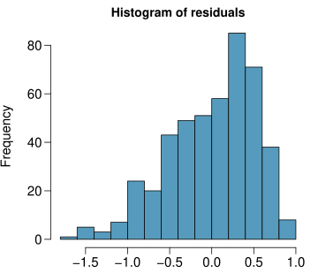
Điều kiện này có vẻ được thỏa mãn không?
(2) phần dư có phương sai không đổi
biểu đồ phân tán của phần dư và/hoặc giá trị tuyệt đối của phần dư so với giá trị khớp (dự báo) (fitted/predicted):
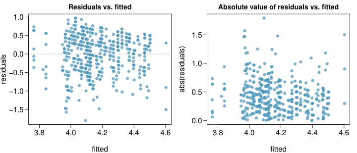
Điều kiện này có vẻ được thỏa mãn không?
Kiểm tra phương sai không đổi - tóm tắt
- Khi chúng ta thực hiện hồi quy tuyến tính đơn biến (một biến giải thích), chúng ta đã kiểm tra điều kiện phương sai không đổi bằng cách sử dụng biểu đồ phần dư so với x (residuals vs. x).
- Với hồi quy tuyến tính đa biến (2+ biến giải thích), chúng ta kiểm tra điều kiện phương sai không đổi bằng cách sử dụng biểu đồ phần dư so với giá trị khớp (residuals vs. fitted).
Tại sao chúng ta sử dụng các biểu đồ khác nhau?
Trong hồi quy tuyến tính đa biến có nhiều biến giải thích, vì vậy biểu đồ phần dư so với một trong số chúng sẽ không cho chúng ta bức tranh đầy đủ.
(3) phần dư độc lập
biểu đồ phân tán của phần dư so với thứ tự thu thập dữ liệu:
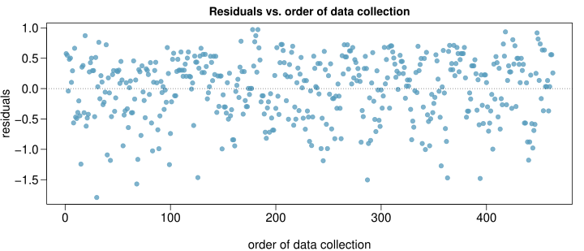
Điều kiện này có vẻ được thỏa mãn không?
Thêm về điều kiện phần dư độc lập
- Kiểm tra phần dư độc lập cho phép chúng ta kiểm tra gián tiếp các quan sát độc lập.
- Nếu các quan sát và phần dư độc lập, chúng ta không kỳ vọng thấy xu hướng tăng hoặc giảm trong biểu đồ phân tán của phần dư so với thứ tự thu thập dữ liệu.
- Điều kiện này thường bị vi phạm khi chúng ta có dữ liệu chuỗi thời gian (time series data). Những dữ liệu như vậy yêu cầu các kỹ thuật hồi quy chuỗi thời gian tiên tiến hơn để phân tích đúng cách.
(4) các mối quan hệ tuyến tính
biểu đồ phân tán của phần dư so với từng biến giải thích (dạng số):
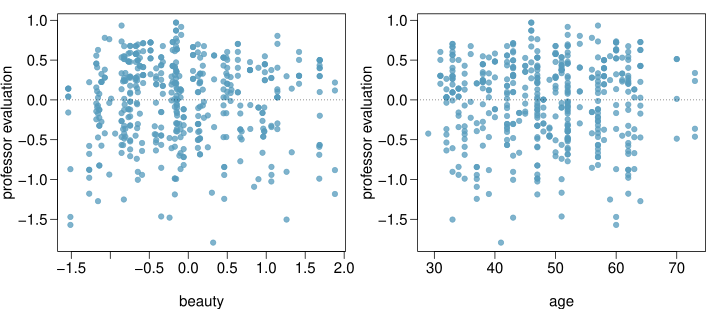
Điều kiện này có vẻ được thỏa mãn không?
Lưu ý: Chúng ta sử dụng phần dư thay vì các biến dự báo trên trục tung để vẫn có thể kiểm tra tính tuyến tính mà không phải lo lắng về các vi phạm có thể xảy ra khác như cộng tuyến giữa các biến dự báo.
Các lựa chọn để cải thiện độ khớp của mô hình
Một số lựa chọn để cải thiện mô hình
- Biến đổi biến (Transforming variables)
- Tìm kiếm các biến bổ sung để lấp đầy khoảng trống của mô hình
- Sử dụng các phương pháp tiên tiến hơn có thể giải quyết các thách thức xung quanh phương sai không đồng nhất hoặc mối quan hệ phi tuyến giữa các biến dự báo và kết quả
Các phép biến đổi
Nếu mối lo ngại đối với mô hình là các mối quan hệ phi tuyến giữa (các) biến giải thích và biến kết quả, việc biến đổi biến kết quả có thể hữu ích.
- Biến đổi Log (log \(y\))
- Biến đổi căn bậc hai (\(\sqrt{y}\))
- Biến đổi nghịch đảo (\(1/y\))
- Cắt cụt (Truncation - giới hạn giá trị tối đa có thể)
Cũng có thể áp dụng các phép biến đổi cho (các) biến giải thích, tuy nhiên các phép biến đổi như vậy có xu hướng làm cho các hệ số mô hình càng khó giải thích hơn.
Mô hình có thể sai, nhưng hữu ích
Tất cả các mô hình đều sai, nhưng một số thì hữu ích. - George Box
- Không có mô hình nào là hoàn hảo, nhưng ngay cả những mô hình không hoàn hảo cũng có thể hữu ích, miễn là chúng ta rõ ràng và báo cáo những thiếu sót của mô hình.
- Nếu các điều kiện bị vi phạm nghiêm trọng, chúng ta không nên báo cáo kết quả mô hình mà thay vào đó hãy xem xét một mô hình mới, ngay cả khi điều đó có nghĩa là phải học thêm các phương pháp thống kê hoặc thuê người có thể giúp đỡ.
10.4 Hồi quy logistic
Hồi quy cho đến nay …
Tại thời điểm này chúng ta đã bao quát:
- Hồi quy tuyến tính đơn biến (Simple linear regression)
- Mối quan hệ giữa biến kết quả dạng số và một biến dự báo dạng số hoặc phân loại
- Hồi quy đa biến (Multiple regression)
- Mối quan hệ giữa biến kết quả dạng số và nhiều biến dự báo dạng số và/hoặc phân loại
Những gì chúng ta chưa thấy là phải làm gì khi các biến dự báo kỳ lạ (phi tuyến, cấu trúc phụ thuộc phức tạp, v.v.) hoặc khi biến kết quả kỳ lạ (dạng phân loại, dữ liệu đếm, v.v.)
Tỉ số chênh
Tỉ số chênh (Odds) là một cách khác để định lượng xác suất của một sự kiện, thường được sử dụng trong cờ bạc (và hồi quy logistic).
Tỉ số chênh (Odds) Cho một sự kiện \(E\), \[ \text{odds}(E) = \frac{P(E)}{P(E^c)} = \frac{P(E)}{1-P(E)} \] Tương tự, nếu chúng ta được cho biết tỉ số chênh của E là \(x\) so với \(y\) thì \[ \text{odds}(E) = \frac{x}{y} = \frac{x/(x+y)}{y/(x+y)} \] điều này ngụ ý \[ P(E) = x/(x+y),\quad P(E^c) = y/(x+y) \]
Mô hình tuyến tính tổng quát
Ví dụ - Đoàn Donner
Năm 1846, gia đình Donner và Reed rời Springfield, Illinois, để đến California bằng xe ngựa kéo. Vào tháng 7, Đoàn Donner (Donner Party), theo tên gọi sau này, đã đến Fort Bridger, Wyoming. Tại đó, những người lãnh đạo đoàn đã quyết định thử một con đường mới và chưa được kiểm chứng để đến Thung lũng Sacramento. Sau khi đạt đến quy mô đầy đủ là 87 người và 20 xe ngựa, đoàn đã bị trì hoãn bởi việc vượt qua dãy núi Wasatch đầy khó khăn và một lần nữa khi vượt qua sa mạc phía tây Hồ Muối Lớn (Great Salt Lake). Nhóm bị mắc kẹt ở dãy núi phía đông Sierra Nevada khi khu vực này bị tấn công bởi những trận tuyết lớn vào cuối tháng 10. Vào thời điểm người sống sót cuối cùng được cứu vào ngày 21 tháng 4 năm 1847, 40 trong số 87 thành viên đã chết vì đói và tiếp xúc với cái lạnh khắc nghiệt.
Ví dụ - Đoàn Donner - Dữ liệu
| Tuổi (Age) | Giới tính (Sex) | Trạng thái (Status) | |
|---|---|---|---|
| 1 | 23.00 | Nam | Chết |
| 2 | 40.00 | Nữ | Sống sót |
| 3 | 40.00 | Nam | Sống sót |
| 4 | 30.00 | Nam | Chết |
| 5 | 28.00 | Nam | Chết |
| \(\vdots\) | \(\vdots\) | \(\vdots\) | \(\vdots\) |
| 43 | 23.00 | Nam | Sống sót |
| 44 | 24.00 | Nam | Chết |
| 45 | 25.00 | Nữ | Sống sót |
Ví dụ - Đoàn Donner - Phân tích khám phá EDA
Trạng thái so với Giới tính: | | Nam | Nữ | |—|—|—| | Chết | 20 | 5 | | Sống sót | 10 | 10 |
Trạng thái so với Tuổi:
Ví dụ - Đoàn Donner
Dường như rõ ràng là cả tuổi tác và giới tính đều có ảnh hưởng đến sự sống sót của một người, làm thế nào chúng ta đưa ra một mô hình cho phép chúng ta khám phá mối quan hệ này?
Ngay cả khi chúng ta đặt Chết thành 0 và Sống sót thành 1, đây không phải là thứ chúng ta có thể sử dụng các phép biến đổi để giải quyết - chúng ta cần một thứ gì đó hơn thế.
Một cách để suy nghĩ về vấn đề - chúng ta có thể coi Sống sót và Chết là những thành công và thất bại phát sinh từ một phân phối nhị thức (binomial distribution) trong đó xác suất thành công được đưa ra bởi một phép biến đổi của một mô hình tuyến tính của các biến dự báo.
Mô hình tuyến tính tổng quát
Hóa ra đây là một cách rất tổng quát để giải quyết loại vấn đề này trong hồi quy, và các mô hình kết quả được gọi là mô hình tuyến tính tổng quát (generalized linear models - GLMs). Hồi quy logistic chỉ là một ví dụ của loại mô hình này.
Tất cả các mô hình tuyến tính tổng quát đều có ba đặc điểm sau:
- Một phân phối xác suất mô tả biến kết quả
- Một mô hình tuyến tính
- \(\eta = \beta_0+\beta_1 X_1 + \cdots + \beta_n X_n\)
- Một hàm liên kết (link function) liên hệ mô hình tuyến tính với tham số của phân phối kết quả
- \(g(p) = \eta\) hoặc \(p = g^{-1}(\eta)\)
Hồi quy Logistic
Hồi quy Logistic
Hồi quy logistic là một GLM được sử dụng để mô hình hóa một biến phân loại nhị phân bằng cách sử dụng các biến dự báo dạng số và phân loại.
Chúng ta giả định một phân phối nhị thức tạo ra biến kết quả và do đó chúng muốn mô hình hóa \(p\) là xác suất thành công cho một tập hợp các biến dự báo nhất định.
Để hoàn tất việc xác định mô hình Logistic, chúng ta chỉ cần thiết lập một hàm liên kết hợp lý kết nối \(\eta\) với \(p\). Có nhiều lựa chọn khác nhau nhưng được sử dụng phổ biến nhất là hàm logit (logit function).
Hàm Logit (Logit function)
\[ logit(p) = \log\left(\frac{p}{1-p}\right),\text{ cho } 0\le p \le 1 \]
Các tính chất của Logit
Hàm logit nhận một giá trị từ 0 đến 1 và ánh xạ nó tới một giá trị từ \(-\infty\) đến \(\infty\).
Hàm logit nghịch đảo (logistic function)
\[ g^{-1}(x) = \frac{\exp(x)}{1+\exp(x)} = \frac{1}{1+\exp(-x)} \]
Hàm logit nghịch đảo nhận một giá trị từ \(-\infty\) đến \(\infty\) và ánh xạ nó tới một giá trị từ 0 đến 1.
Công thức này cũng có một số công dụng khi giải thích mô hình vì logit có thể được giải thích là log tỉ số chênh (log odds) của một thành công, chi tiết hơn về phần này sẽ có ở sau.
Mô hình hồi quy logistic
Ba tiêu chí GLM cho chúng ta:
\[\begin{align*} y_i &\sim \text{Binom}(p_i)\\ \\ \eta &= \beta_0+\beta_1 x_1 + \cdots + \beta_n x_n\\ \\ \text{logit}(p) &= \eta \end{align*}\]
Từ đó chúng ta đi đến,
\[ p_i = \frac{\exp(\beta_0+\beta_1 x_{1,i} + \cdots + \beta_n x_{n,i})}{1+\exp(\beta_0+\beta_1 x_{1,i} + \cdots + \beta_n x_{n,i})} \]
Ví dụ - Đoàn Donner - Mô hình
Trong R, chúng ta khớp một GLM theo cùng cách như một mô hình tuyến tính ngoại trừ việc sử dụng glm thay vì lm và chúng ta cũng phải chỉ định loại GLM cần khớp bằng đối số family.
summary(glm(Status ~ Age, data=donner, family=binomial))
## Call:
## glm(formula = Status ~ Age, family = binomial, data = donner)
##
## Coefficients:
## Estimate Std. Error z value Pr(>|z|)
## (Intercept) 1.81852 0.99937 1.820 0.0688 .
## Age -0.06647 0.03222 -2.063 0.0391 *
##
## Null deviance: 61.827 on 44 degrees of freedom
## Residual deviance: 56.291 on 43 degrees of freedom
## AIC: 60.291
##
## Number of Fisher Scoring iterations: 4Ví dụ - Đoàn Donner - Dự báo
| Ước tính (Estimate) | Sai số chuẩn (Std. Error) | giá trị z (z value) | Pr(>\(|\)z\(|\)) | |
|---|---|---|---|---|
| (Hệ số chặn) | 1.8185 | 0.9994 | 1.82 | 0.0688 |
| Tuổi (Age) | -0.0665 | 0.0322 | -2.06 | 0.0391 |
Mô hình:
\[ \log\left(\frac{p}{1-p}\right) = 1.8185-0.0665\times \text{Age} \]
Tỉ số chênh / Xác suất sống sót cho một trẻ sơ sinh (Tuổi=0): \[\begin{align*} \log\left(\frac{p}{1-p}\right) &= 1.8185-0.0665\times 0\\ \frac{p}{1-p} &= \exp(1.8185) = 6.16 \\ p &= 6.16/7.16 = 0.86 \end{align*}\]
Mô hình:
\[ \log\left(\frac{p}{1-p}\right) = 1.8185-0.0665\times \text{Age} \]
Tỉ số chênh / Xác suất sống sót cho một người 25 tuổi:
\[\begin{align*} \log\left(\frac{p}{1-p}\right) &= 1.8185-0.0665\times 25\\ \frac{p}{1-p} &= \exp(0.156) = 1.17 \\ p &= 1.17/2.17 = 0.539 \end{align*}\]
Tỉ số chênh / Xác suất sống sót cho một người 50 tuổi:
\[\begin{align*} \log\left(\frac{p}{1-p}\right) &= 1.8185-0.0665\times 50\\ \frac{p}{1-p} &= \exp(-1.5065) = 0.222 \\ p &= 0.222/1.222 = 0.181 \end{align*}\]
\[ \log\left(\frac{p}{1-p}\right) = 1.8185-0.0665\times \text{Age} \]
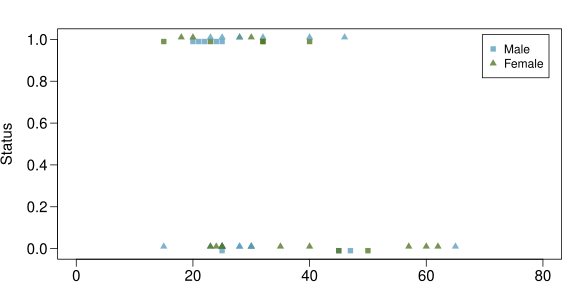
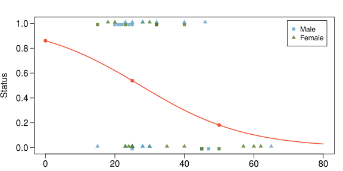
Ví dụ - Đoàn Donner - Giải thích
| Ước tính (Estimate) | Sai số chuẩn (Std. Error) | giá trị z (z value) | Pr(>\(|\)z\(|\)) | |
|---|---|---|---|---|
| (Hệ số chặn) | 1.8185 | 0.9994 | 1.82 | 0.0688 |
| Tuổi (Age) | -0.0665 | 0.0322 | -2.06 | 0.0391 |
Giải thích đơn giản chỉ có thể thực hiện thông qua log tỉ số chênh (log odds) và log tỉ số của tỉ số chênh (log odds ratios) cho hệ số chặn và hệ số góc.
Hệ số chặn: Log tỉ số chênh sống sót cho một thành viên trong đoàn có tuổi là 0. Từ đây chúng ta có thể tính toán tỉ số chênh hoặc xác suất, nhưng cần các tính toán bổ sung.
Hệ số góc: Đối với sự gia tăng một đơn vị tuổi (lớn hơn 1 tuổi) thì log tỉ số của tỉ số chênh sẽ thay đổi bao nhiêu, điều này không đặc biệt trực quan. Thông thường, chúng ta chỉ quan tâm đến dấu và độ lớn tương đối.
Ví dụ - Đoàn Donner - Giải thích - Hệ số góc
\[\begin{align*} \log\left(\frac{p_1}{1-p_1}\right) &= 1.8185-0.0665 (x+1) \\ &= 1.8185-0.0665 x-0.0665 \\ \log\left(\frac{p_2}{1-p_2}\right) &= 1.8185-0.0665 x \\ \\ \log\left(\frac{p_1}{1-p_1}\right) - \log\left(\frac{p_2}{1-p_2}\right) &= -0.0665 \\ \log\left(\left. \frac{p_1}{1-p_1} \right/ \frac{p_2}{1-p_2} \right) &= -0.0665 \\ \left. \frac{p_1}{1-p_1} \right/ \frac{p_2}{1-p_2} &= \exp(-0.0665) = 0.94 \end{align*}\]
Ví dụ - Đoàn Donner - Tuổi và Giới tính
summary(glm(Status ~ Age + Sex, data=donner, family=binomial))
## Call:
## glm(formula = Status ~ Age + Sex, family = binomial, data = donner)
##
## Coefficients:
## Estimate Std. Error z value Pr(>|z|)
## (Intercept) 1.63312 1.11018 1.471 0.1413
## Age -0.07820 0.03728 -2.097 0.0359 *
## SexFemale 1.59729 0.75547 2.114 0.0345 *
## ---
##
## (Dispersion parameter for binomial family taken to be 1)
##
## Null deviance: 61.827 on 44 degrees of freedom
## Residual deviance: 51.256 on 42 degrees of freedom
## AIC: 57.256
##
## Number of Fisher Scoring iterations: 4Hệ số góc giới tính: Khi các biến dự báo khác được giữ không đổi, đây là log tỉ số của tỉ số chênh giữa mức được cho (Nữ) và mức tham chiếu (Nam).
Ví dụ - Đoàn Donner - Các mô hình giới tính
Giống như MLR, chúng ta có thể thay giới tính vào để đi đến hai mô hình trạng thái so với tuổi tương ứng cho nam và nữ.
Mô hình tổng quát:
\[ \log\left(\frac{p_1}{1-p_1}\right) = 1.63312 + -0.07820\times\text{Age} + 1.59729\times\text{Sex} \]
Mô hình Nam:
\[\begin{align*} \log\left(\frac{p_1}{1-p_1}\right) &= 1.63312 + -0.07820\times\text{Age} + 1.59729\times 0\\ &= 1.63312 + -0.07820\times\text{Age} \end{align*}\]
Mô hình Nữ:
\[\begin{align*} \log\left(\frac{p_1}{1-p_1}\right) &= 1.63312 + -0.07820\times\text{Age} + 1.59729\times 1\\ &= 3.23041 + -0.07820\times\text{Age} \end{align*}\]
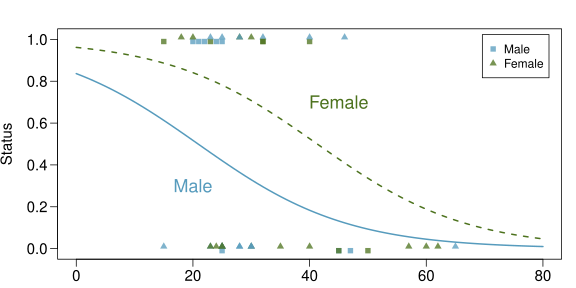
Kiểm định giả thuyết cho toàn bộ mô hình
summary(glm(Status ~ Age + Sex, data=donner, family=binomial))
## Call:
## glm(formula = Status ~ Age + Sex, family = binomial, data = donner)
##
## Coefficients:
## Estimate Std. Error z value Pr(>|z|)
## (Intercept) 1.63312 1.11018 1.471 0.1413
## Age -0.07820 0.03728 -2.097 0.0359 *
## SexFemale 1.59729 0.75547 2.114 0.0345 *
## ---
##
## (Dispersion parameter for binomial family taken to be 1)
##
## Null deviance: 61.827 on 44 degrees of freedom
## Residual deviance: 51.256 on 42 degrees of freedom
## AIC: 57.256
##
## Number of Fisher Scoring iterations: 4Lưu ý: Kết quả mô hình không bao gồm bất kỳ thống kê F nào, vì theo quy tắc chung, không có các kiểm định giả thuyết mô hình đơn lẻ cho các mô hình GLM.
Kiểm định giả thuyết cho một hệ số
| Ước tính (Estimate) | Sai số chuẩn (Std. Error) | giá trị z (z value) | Pr(>\(|\)z\(|\)) | |
|---|---|---|---|---|
| (Hệ số chặn) | 1.6331 | 1.1102 | 1.47 | 0.1413 |
| Tuổi (Age) | -0.0782 | 0.0373 | -2.10 | 0.0359 |
| SexFemale | 1.5973 | 0.7555 | 2.11 | 0.0345 |
Tuy nhiên, chúng ta vẫn có thể thực hiện suy diễn cho các hệ số riêng lẻ, thiết lập cơ bản hoàn toàn giống với những gì chúng ta đã thấy trước đây ngoại trừ việc chúng ta sử dụng kiểm định Z (Z test).
Lưu ý: Điểm lắt léo duy nhất, vốn nằm ngoài phạm vi của khóa học này, là cách sai số chuẩn được tính toán.
Kiểm định hệ số góc của Tuổi (Age)
| Ước tính (Estimate) | Sai số chuẩn (Std. Error) | giá trị z (z value) | Pr(>\(|\)z\(|\)) | |
|---|---|---|---|---|
| (Hệ số chặn) | 1.6331 | 1.1102 | 1.47 | 0.1413 |
| Tuổi (Age) | -0.0782 | 0.0373 | -2.10 | 0.0359 |
| SexFemale | 1.5973 | 0.7555 | 2.11 | 0.0345 |
\[\begin{align*} H_0:~& \beta_{age} = 0 \\ H_A:~& \beta_{age} \ne 0 \end{align*}\]
\[\begin{align*} Z &= \frac{\hat{\beta_{age}} - \beta_{age}}{SE_{age}} = \frac{-0.0782 - 0}{0.0373} = -2.10 \\ \\ \text{giá trị p} &= P(|Z| > 2.10) = P(Z>2.10)+P(Z<-2.10)\\ &= 2\times 0.0178 = 0.0359 \end{align*}\]
Khoảng tin cậy cho hệ số góc tuổi
| Ước tính (Estimate) | Sai số chuẩn (Std. Error) | giá trị z (z value) | Pr(>\(|\)z\(|\)) | |
|---|---|---|---|---|
| (Hệ số chặn) | 1.6331 | 1.1102 | 1.47 | 0.1413 |
| Tuổi (Age) | -0.0782 | 0.0373 | -2.10 | 0.0359 |
| SexFemale | 1.5973 | 0.7555 | 2.11 | 0.0345 |
Hãy nhớ rằng, việc giải thích cho một hệ số góc là sự thay đổi trong log tỉ số của tỉ số chênh trên mỗi đơn vị thay đổi của biến dự báo.
Log tỉ số của tỉ số chênh (Log odds ratio): \[ CI = PE \pm CV \times SE = -0.0782 \pm 1.96 \times 0.0373 = (-0.1513, -0.0051) \]
Tỉ số của tỉ số chênh (Odds ratio): \[ \exp(CI) = (\exp{-0.1513}, \exp{-0.0051}) = (0.8596, 0.9949) \]
Ví dụ bổ sung
Ví dụ - Nuôi chim và Ung thư phổi
Một cuộc khảo sát sức khỏe từ năm 1972 đến 1981 tại The Hague, Hà Lan, đã phát hiện ra mối liên hệ giữa việc nuôi chim cảnh và nguy cơ ung thư phổi tăng cao. Để điều tra việc nuôi chim như một yếu tố nguy cơ, các nhà nghiên cứu đã thực hiện một nghiên cứu bệnh-chứng (case-control study) trên các bệnh nhân vào năm 1985 tại bốn bệnh viện ở The Hague (dân số 450.000 người). Họ đã xác định được 49 trường hợp ung thư phổi trong số các bệnh nhân đã đăng ký với một phòng khám đa khoa, những người từ 65 tuổi trở xuống và đã cư trú tại thành phố từ năm 1965. Họ cũng chọn ra 98 người đối chứng từ một nhóm cư dân có cùng cấu trúc độ tuổi chung.
Ví dụ - Nuôi chim và Ung thư phổi - Dữ liệu
| LC | FM | SS | BK | AG | YR | CD | |
|---|---|---|---|---|---|---|---|
| 1 | LungCancer | Male | Low | Bird | 37.00 | 19.00 | 12.00 |
| 2 | LungCancer | Male | Low | Bird | 41.00 | 22.00 | 15.00 |
| 3 | LungCancer | Male | High | NoBird | 43.00 | 19.00 | 15.00 |
| \(\vdots\) | \(\vdots\) | \(\vdots\) | \(\vdots\) | \(\vdots\) | \(\vdots\) | \(\vdots\) | \(\vdots\) |
| 147 | NoCancer | Female | Low | NoBird | 65.00 | 7.00 | 2.00 |
| Biến (Variable) | Mô tả (Description) |
|---|---|
LC |
Đối tượng có bị ung thư phổi hay không |
FM |
Giới tính của đối tượng |
SS |
Trạng thái kinh tế xã hội |
BK |
Chỉ báo về việc nuôi chim |
AG |
Tuổi của đối tượng (năm) |
YR |
Số năm hút thuốc trước khi chẩn đoán hoặc kiểm tra |
CD |
Tỷ lệ hút thuốc trung bình (số điếu thuốc mỗi ngày) |
Lưu ý: NoCancer là phản hồi tham chiếu (0 hoặc thất bại), LungCancer là phản hồi không tham chiếu (1 hoặc thành công) - điều này quan trọng cho việc giải thích.
Ví dụ - Nuôi chim và Ung thư phổi - EDA
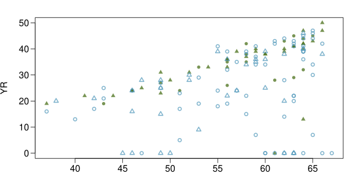
| Nuôi chim (Bird) | Không nuôi chim (No Bird) | |
|---|---|---|
| Ung thư phổi | \(\blacktriangle\) | \(\bullet\) |
| Không bị ung thư phổi | \(\triangle\) | \(\circ\) |
Ví dụ - Nuôi chim và Ung thư phổi - Mô hình
summary(glm(LC ~ FM + SS + BK + AG + YR + CD, data=bird, family=binomial))
## Call:
## glm(formula = LC ~ FM + SS + BK + AG + YR + CD, family = binomial,
## data = bird)
##
## Coefficients:
## Estimate Std. Error z value Pr(>|z|)
## (Intercept) -1.93736 1.80425 -1.074 0.282924
## FMFemale 0.56127 0.53116 1.057 0.290653
## SSHigh 0.10545 0.46885 0.225 0.822050
## BKBird 1.36259 0.41128 3.313 0.000923 ***
## AG -0.03976 0.03548 -1.120 0.262503
## YR 0.07287 0.02649 2.751 0.005940 **
## CD 0.02602 0.02552 1.019 0.308055
##
## (Dispersion parameter for binomial family taken to be 1)
##
## Null deviance: 187.14 on 146 degrees of freedom
## Residual deviance: 154.20 on 140 degrees of freedom
## AIC: 168.2
##
## Number of Fisher Scoring iterations: 5Ví dụ - Nuôi chim và Ung thư phổi - Giải thích
| Ước tính (Estimate) | Sai số chuẩn (Std. Error) | giá trị z (z value) | Pr(>\(|\)z\(|\)) | |
|---|---|---|---|---|
| (Hệ số chặn) | -1.9374 | 1.8043 | -1.07 | 0.2829 |
| FMFemale | 0.5613 | 0.5312 | 1.06 | 0.2907 |
| SSHigh | 0.1054 | 0.4688 | 0.22 | 0.8221 |
| BKBird | 1.3626 | 0.4113 | 3.31 | 0.0009 |
| AG | -0.0398 | 0.0355 | -1.12 | 0.2625 |
| YR | 0.0729 | 0.0265 | 2.75 | 0.0059 |
| CD | 0.0260 | 0.0255 | 1.02 | 0.3081 |
Giữ tất cả các biến dự báo khác không đổi, khi đó:
- Tỉ số của tỉ số chênh (odds ratio) bị ung thư phổi của những người nuôi chim so với những người không nuôi chim là \(\exp(1.3626) = 3.91\).
- Tỉ số của tỉ số chênh bị ung thư phổi cho mỗi năm hút thuốc thêm là \(\exp(0.0729) = 1.08\).
Những con số không có nghĩa là gì …
Sai lầm phổ biến nhất khi giải thích hồi quy logistic là coi tỉ số của tỉ số chênh (odds ratio) như một tỉ lệ của các xác suất.
Những người nuôi chim không phải có khả năng bị ung thư phổi cao gấp 4 lần so với những người không nuôi chim.
Đây là sự khác biệt giữa nguy cơ tương đối (relative risk) và tỉ số của tỉ số chênh (odds ratio).
\[ RR = \frac{P(\text{bệnh} | \text{tiếp xúc})}{P(\text{bệnh} | \text{không tiếp xúc})} \]
\[ OR = \frac{P(\text{bệnh} | \text{tiếp xúc}) / [1-P(\text{bệnh} | \text{tiếp xúc})]}{P(\text{bệnh} | \text{không tiếp xúc})/[1-P(\text{bệnh} | \text{không tiếp xúc})]} \]
Quay lại với những con chim
Xác suất ung thư phổi ở một người nuôi chim là bao nhiêu nếu chúng ta biết rằng \(P(\text{ung thư phổi}|\text{không nuôi chim}) = 0.05\)?
\[\begin{align*} OR &= \frac{P(\text{ung thư phổi} | \text{nuôi chim}) / [1-P(\text{ung thư phổi} | \text{nuôi chim})]}{P(\text{ung thư phổi} | \text{không nuôi chim})/[1-P(\text{ung thư phổi} | \text{không nuôi chim})]} \\ \\ &= \frac{P(\text{ung thư phổi} | \text{nuôi chim}) / [1-P(\text{ung thư phổi} | \text{nuôi chim})]}{0.05/[1-0.05]} = 3.91 \end{align*}\]
\[ P(\text{ung thư phổi} | \text{nuôi chim}) = \frac{3.91 \times \frac{0.05}{0.95}}{1+3.91 \times \frac{0.05}{0.95}} = 0.171 \]
\[ RR = P(\text{ung thư phổi} | \text{nuôi chim}) / P(\text{ung thư phổi} | \text{không nuôi chim}) = 0.171 / 0.05 = 3.41 \]
Đường cong OR Chim
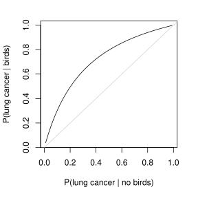
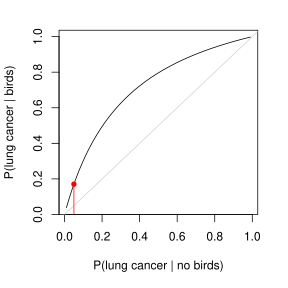
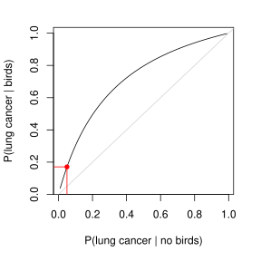
Các đường cong OR
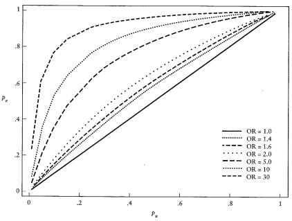
Độ nhạy và Độ đặc hiệu
(Một ví dụ cũ) Ví dụ - Bác sĩ House
Nếu bạn đã từng xem chương trình truyền hình House trên Fox, bạn sẽ biết rằng Bác sĩ House thường xuyên tuyên bố, “Không bao giờ là lupus.”
Lupus là một hiện tượng y tế trong đó các kháng thể vốn được cho là tấn công các tế bào ngoại lai để ngăn ngừa nhiễm trùng lại coi các protein huyết tương là vật thể ngoại lai, dẫn đến nguy cơ cao bị đông máu. Người ta tin rằng 2% dân số mắc căn bệnh này.
Xét nghiệm lupus rất chính xác nếu người đó thực sự mắc lupus, tuy nhiên lại rất không chính xác nếu người đó không mắc. Cụ thể hơn, xét nghiệm chính xác 98% nếu một người thực sự mắc bệnh. Xét nghiệm chính xác 74% nếu một người không mắc bệnh.
Bác sĩ House có đúng không ngay cả khi ai đó có kết quả xét nghiệm dương tính với Lupus?
(Một ví dụ cũ) Ví dụ - Bác sĩ House
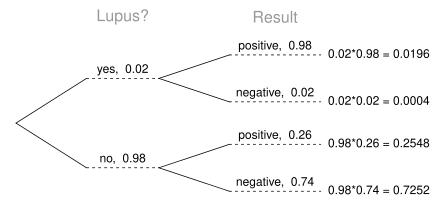
\[\begin{align*} P(\text{Lupus} | +) &= \frac{P(+,\text{Lupus})}{P(+,\text{Lupus})+P(+,\text{No Lupus})} \\ &= \frac{0.0196}{0.0196+0.2548} = 0.0714 \end{align*}\]
Xét nghiệm lupus
Hóa ra việc xét nghiệm Lupus thực sự khá phức tạp, một chẩn đoán thường dựa trên kết quả của nhiều xét nghiệm, thường bao gồm: tổng phân tích tế bào máu, tốc độ lắng hồng cầu, đánh giá thận và gan, phân tích nước tiểu, và hoặc xét nghiệm kháng thể kháng nhân (ANA).
Điều quan trọng là phải suy nghĩ về những gì liên quan đến mỗi xét nghiệm này (ví dụ: quyết định xem số lượng tế bào máu toàn bộ là cao hay thấp) và cách mỗi xét nghiệm riêng lẻ và các quyết định liên quan đóng vai trò như thế nào trong quyết định tổng thể chẩn đoán bệnh nhân mắc lupus.
Xét nghiệm lupus
Ở một mức độ nào đó, chúng ta có thể coi một chẩn đoán là một quyết định nhị phân (có lupus hoặc không lupus) liên quan đến sự tích hợp phức tạp của các biến giải thích khác nhau.
Ví dụ không cho chúng ta bất kỳ thông tin nào về cách đưa ra chẩn đoán, nhưng những gì nó cung cấp cho chúng ta cũng quan trọng không kém - độ nhạy và độ đặc hiệu của xét nghiệm. Những giá trị này rất quan trọng để chúng ta hiểu kết quả xét nghiệm dương tính hoặc âm tính thực sự có ý nghĩa gì.
Độ nhạy và Độ đặc hiệu
Độ nhạy (Sensitivity) - đo lường khả năng của một xét nghiệm trong việc xác định các kết quả dương tính. \[ P(\text{Xét nghiệm }+~|~\text{Tình trạng }+) = P(+ | \text{lupus}) = 0.98 \]
Độ đặc hiệu (Specificity) - đo lường khả năng của một xét nghiệm trong việc xác định các kết quả âm tính. \[ P(\text{Xét nghiệm }-~|~\text{Tình trạng }-) = P(- | \text{no lupus}) = 0.74 \]
Thật hữu ích khi nghĩ về các trường hợp cực đoan - độ nhạy và độ đặc hiệu của một xét nghiệm luôn trả về kết quả dương tính là gì? Còn đối với một xét nghiệm luôn trả về kết quả âm tính thì sao?
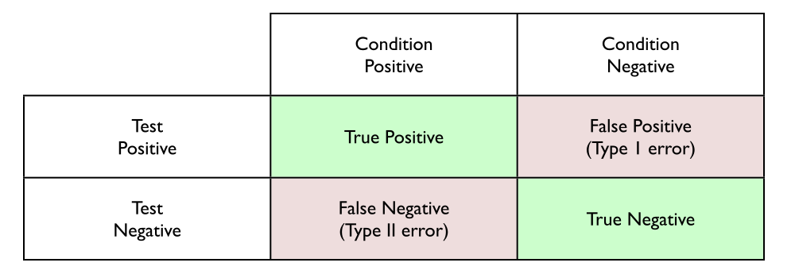
\[\begin{align*} \text{Độ nhạy (Sensitivity)} &= P(\text{Xét nghiệm }+~|~\text{Tình trạng }+) = TP / (TP + FN) \\ \text{Độ đặc hiệu (Specificity)} &= P(\text{Xét nghiệm }-~|~\text{Tình trạng }-) = TN / (FP + TN)\\ \text{Tỷ lệ âm tính giả (False negative rate)} (\beta) &= P(\text{Xét nghiệm }-~|~\text{Tình trạng }+) = FN / (TP + FN) \\ \text{Tỷ lệ dương tính giả (False positive rate)} (\alpha) &= P(\text{Xét nghiệm }+~|~\text{Tình trạng }-) = FP / (FP + TN) \end{align*}\]
\[\begin{align*} \text{Độ nhạy (Sensitivity)} &= 1 - \text{Tỷ lệ âm tính giả} = \text{Lực lượng kiểm định (Power)}\\ \text{Độ đặc hiệu (Specificity)} &= 1 - \text{Tỷ lệ dương tính giả} \end{align*}\]
Vậy thì sao?
Rõ ràng việc biết Độ nhạy và Độ đặc hiệu của xét nghiệm (và hoặc tỷ lệ dương tính giả và âm tính giả) là rất quan trọng. Cùng với tỷ lệ mắc bệnh (ví dụ: \(P(\text{lupus})\)), những giá trị này là cần thiết để tính toán các đại lượng quan trọng như \(P(\text{lupus} | + )\).
Ngoài ra, việc tìm hiểu sơ qua về phân tích lực lượng kiểm định trước kỳ thi giữa kỳ đầu tiên cũng sẽ cho bạn ý tưởng về sự đánh đổi vốn có trong việc giảm thiểu tỷ lệ dương tính giả và âm tính giả (tăng lực lượng kiểm định yêu cầu tăng \(\alpha\) hoặc \(n\)).
Chúng ta nên sử dụng thông tin này như thế nào khi cố gắng đưa ra một quyết định?
Đường cong ROC
Trở lại với Thư rác (Spam)
Trong bài thực hành tuần này, chúng ta đã kiểm tra một tập dữ liệu email mà chúng ta quan tâm đến việc xác định các thư rác. Chúng ta đã xem xét các mô hình hồi quy logistic khác nhau để đánh giá cách các biến dự báo khác nhau ảnh hưởng đến xác suất một tin nhắn là thư rác.
Các mô hình này cũng có thể được sử dụng để gán xác suất cho các tin nhắn đến (điều này tương đương với dự báo trong trường hợp SLR / MLR). Tuy nhiên, nếu chúng ta đang thiết kế một bộ lọc thư rác thì đây chỉ mới là một nửa chặng đường, chúng ta cũng cần sử dụng các xác suất này để đưa ra quyết định về việc email nào bị gắn thẻ là thư rác.
Mặc dù không phải là giải pháp khả thi duy nhất, chúng ta sẽ xem xét một cách tiếp cận đơn giản là chọn một xác suất ngưỡng (threshold probability) và bất kỳ email nào vượt quá xác suất đó sẽ bị gắn thẻ là thư rác.
Chọn một ngưỡng (Picking a threshold)
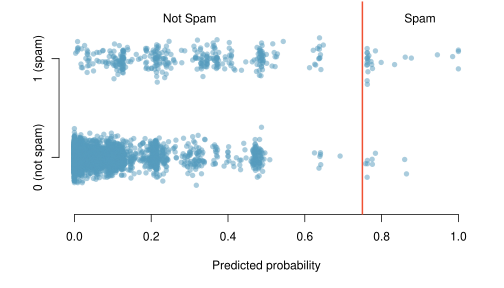
Hãy xem điều gì xảy ra nếu chúng ta chọn ngưỡng là 0,75.
Hệ quả của việc chọn một ngưỡng
Đối với tập dữ liệu của chúng ta, việc chọn ngưỡng 0,75 cho chúng ta các kết quả sau:
\[\begin{align*} FN = 340 &\qquad TP = 27 \\ TN = 3545 &\qquad FP = 9 \end{align*}\]
Độ nhạy và độ đặc hiệu cho quy tắc quyết định cụ thể này là bao nhiêu?
\[\begin{align*} \text{Độ nhạy (Sensitivity)} & = TP / (TP + FN) = 27 / (27+340) = 0.073 \\ \text{Độ đặc hiệu (Specificity)} & = TN / (FP + TN) = 3545 / (9+3545) = 0.997 \\ \end{align*}\]
Thử các ngưỡng khác
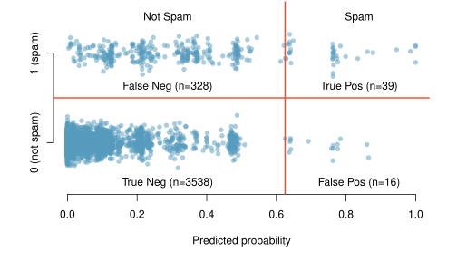
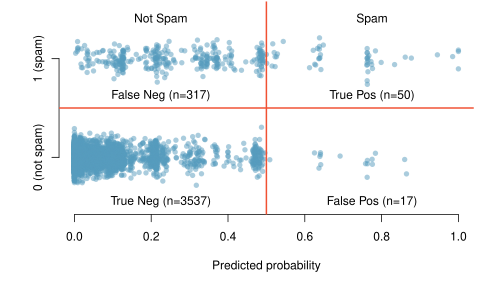
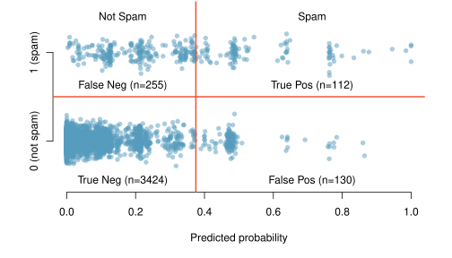
| Ngưỡng | 0.75 | 0.625 | 0.5 | 0.375 | 0.25 |
|---|---|---|---|---|---|
| Độ nhạy (Sensitivity) | 0.074 | 0.106 | 0.136 | 0.305 | 0.510 |
| Độ đặc hiệu (Specificity) | 0.997 | 0.995 | 0.995 | 0.963 | 0.936 |
Mối quan hệ giữa Độ nhạy và Độ đặc hiệu
| Ngưỡng | 0.75 | 0.625 | 0.5 | 0.375 | 0.25 |
|---|---|---|---|---|---|
| Độ nhạy (Sensitivity) | 0.074 | 0.106 | 0.136 | 0.305 | 0.510 |
| Độ đặc hiệu (Specificity) | 0.997 | 0.995 | 0.995 | 0.963 | 0.936 |
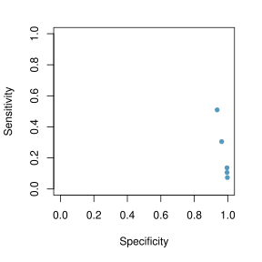
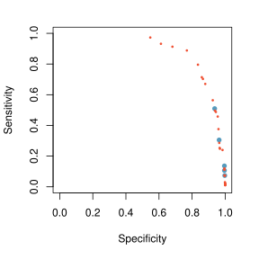
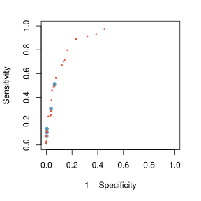
Đường cong Đặc tính hoạt động của máy thu
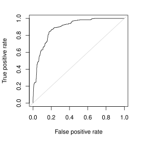
Tại sao chúng ta quan tâm đến đường cong ROC?
- Hiển thị sự đánh đổi giữa độ nhạy và độ đặc hiệu cho tất cả các ngưỡng có thể.
- Dễ dàng so sánh hiệu suất so với sự ngẫu nhiên (chance).
- Có thể sử dụng diện tích dưới đường cong (AUC) như một đánh giá về khả năng dự báo của một mô hình.
Tinh chỉnh mô hình Thư rác (Spam)
g_refined = glm(spam ~ to_multiple+cc+image+attach+winner
+password+line_breaks+format+re_subj
+urgent_subj+exclaim_mess,
data=email, family=binomial)
summary(g_refined)| Ước tính (Estimate) | Sai số chuẩn (Std. Error) | giá trị z (z value) | Pr(>\(|\)z\(|\)) | |
|---|---|---|---|---|
| (Hệ số chặn) | -1.7594 | 0.1177 | -14.94 | 0.0000 |
| to_multipleyes | -2.7368 | 0.3156 | -8.67 | 0.0000 |
| ccyes | -0.5358 | 0.3143 | -1.71 | 0.0882 |
| imageyes | -1.8585 | 0.7701 | -2.41 | 0.0158 |
| attachyes | 1.2002 | 0.2391 | 5.02 | 0.0000 |
| winneryes | 2.0433 | 0.3528 | 5.79 | 0.0000 |
| passwordyes | -1.5618 | 0.5354 | -2.92 | 0.0035 |
| line_breaks | -0.0031 | 0.0005 | -6.33 | 0.0000 |
| formatPlain | 1.0130 | 0.1380 | 7.34 | 0.0000 |
| re_subjyes | -2.9935 | 0.3778 | -7.92 | 0.0000 |
| urgent_subjyes | 3.8830 | 1.0054 | 3.86 | 0.0001 |
| exclaim_mess | 0.0093 | 0.0016 | 5.71 | 0.0000 |
So sánh các mô hình
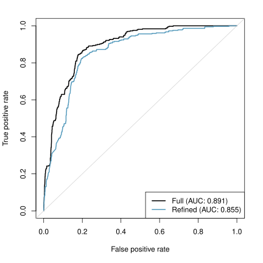
Hàm hữu dụng
Hàm hữu dụng
Có nhiều cách tiếp cận định lượng hợp lý khác mà chúng ta có thể sử dụng để quyết định ngưỡng nào là “tốt nhất”.
Nếu bạn đã từng học một khóa học kinh tế, có lẽ bạn đã nghe nói về ý tưởng về các hàm hữu dụng (utility functions), chúng ta có thể gán các chi phí và lợi ích cho mỗi kết quả có thể xảy ra và sử dụng chúng để tính toán mức độ hữu dụng cho từng trường hợp.
Hàm hữu dụng cho bộ lọc thư rác của chúng ta
Để viết ra một hàm hữu dụng cho một bộ lọc thư rác, chúng ta cần xem xét các chi phí / lợi ích của mỗi kết quả đầu ra.
| Kết quả (Outcome) | Độ hữu dụng (Utility) |
|---|---|
| Dương tính thật (True Positive) | 1 |
| Âm tính thật (True Negative) | 1 |
| Dương tính giả (False Positive) | -50 |
| Âm tính giả (False Negative) | -5 |
\[ U(p) = TP(p) + TN(p) - 50 \times FP(p) - 5 \times FN(p) \]
Độ hữu dụng cho ngưỡng 0,75
Đối với tập dữ liệu email, việc chọn ngưỡng 0,75 cho chúng ta các kết quả sau: \[\begin{align*} FN = 340 &\qquad TP = 27 \\ TN = 3545 &\qquad FP = 9 \end{align*}\]
\[\begin{align*} U(p) &= TP(p) + TN(p) - 50 \times FP(p) - 5 \times FN(p) \\ &= 27+3545-50\times 9-5\times 340 = 1422 \end{align*}\]
Tự thân nó không hữu ích, nhưng cho phép chúng ta so sánh với các ngưỡng khác.
Đường cong hữu dụng (Utility curve)
Đường cong hữu dụng (phóng to)
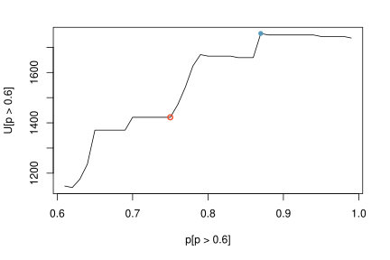